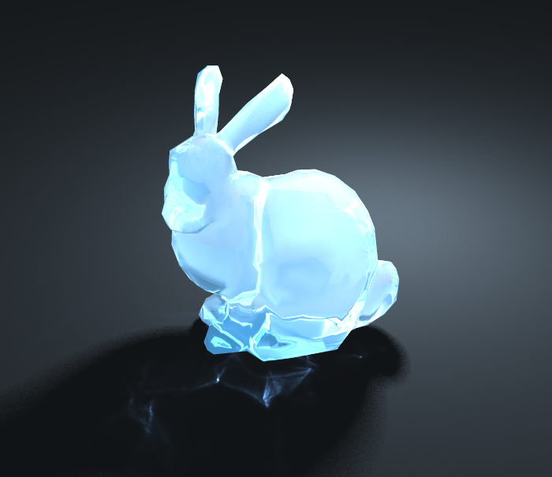
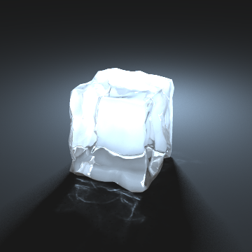
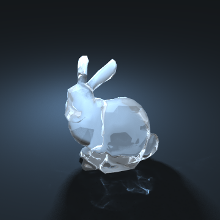
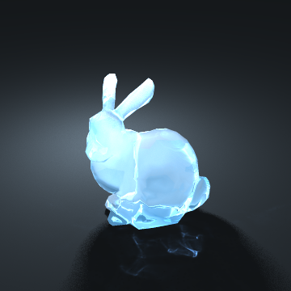

Ice Renderer 6.837 (Computer Graphics) Final Project

Project Description
Implementation of a ray tracer for realistic and "Disney-fied" ice renderings by simulating reflection, refraction, sub-surface scattering, and caustics. Inspired by the work of animation companies such as Disney and implemented based on the work of Henrik Jensen. I focused on rendering caustics by using a photon map (implemented with a kd-tree), while my partner Lynda Tang simulated the visual effects of sub-surface scattering with depth maps.
In collaboration with Lynda Tang
Languages Used: C++, Python
Honorable Mention recipient in the Fall 2016 Computer Graphics course.
Project Links
Image Gallery
Click the below images to enlarge them (make sure your browser has scripts enabled)
Backlit ice cube without sub-surface scattering

Backlit ice bunny without sub-surface scattering

"Disney-fied" bunny using sub-surface scattering